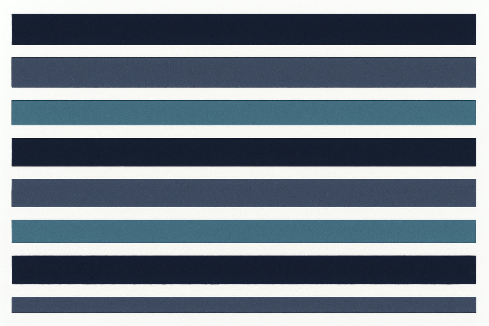

I ran 265+ experiments across six domains, logged every trial kept and discarded, and never wrote a line of Python.
Every instruction given to the system over months fits in one readable file, and none of it is code. Somewhere in month two the pattern became obvious: everything the human contributed was some form of no — no, that split leaks; no, cite the paper or discard the idea; no, one change per experiment; no, the champion stands until something strictly beats it.
The field keeps making agents more capable. Nobody is making them more honest. So the discipline got written down — all of it — into a constitution that never gets tired at 2am.

Agent task horizons by mid-2026, doubling roughly every four months.B2
Humans win 2× at 32 hours. Execution is theirs; judgment is ours.B4
Fall in cost per unit of capability, which makes a 24/7 steering loop a line item rather than a project.B16